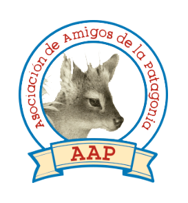

Asociacion de Amigos de la Patagonia
La Asociación de Amigos de la Patagonia (AAP) es una organización sin fines de lucro fundada en 1999, en la ciudad de San Martín de los Andes, Provincia del Neuquén, Argentina. Preocupados por el legado ambiental que le estaban dejando a sus hijos y nietos, un grupo de amigos apasionados por la Patagonia decidieron agruparse formalmente para contribuir en la difusión de las problemáticas que enfrenta el ambiente. Así se creó la AAP, desde la cual concientizamos acerca de la necesidad de cuidar el medio en que vivimos.
.jpg)
Asociación de Amigos de la Patagonia
Los frutos de nuestro trabajo son posibles gracias al apoyo de todas las personas que confían en nosotros.
.jpg)
Una red de desarrollo local
A través de Comunidad Patagonia, buscamos la conformación de una red para fortalecer el desarrollo local, fomentando la sustentabilidad y ayudando a proteger el ambiente y el bienestar de sus habitantes.
.jpg)
Fortaleciendo educadores
El objetivo del Programa es reforzar el espíritu, la conciencia y el conocimiento sobre los recursos hídricos de la región y su manejo adecuado en la comunidad.